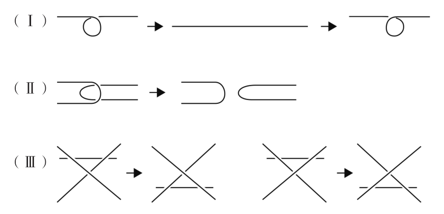
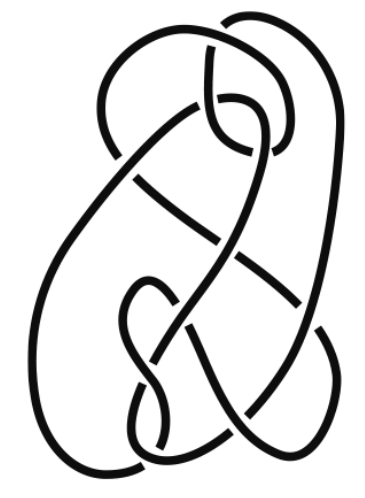
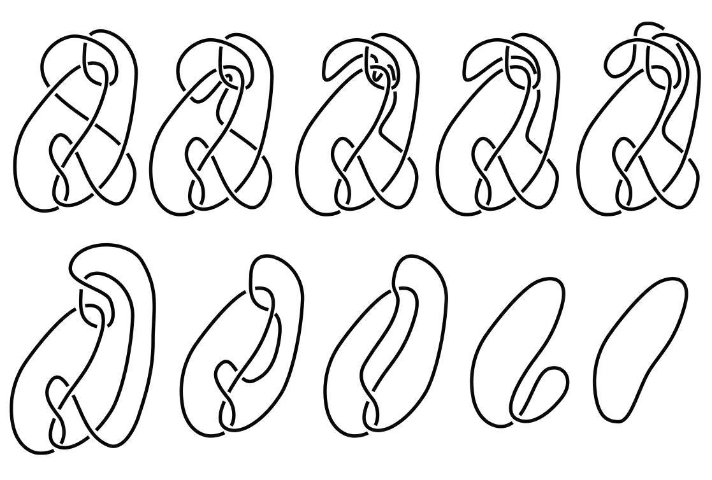
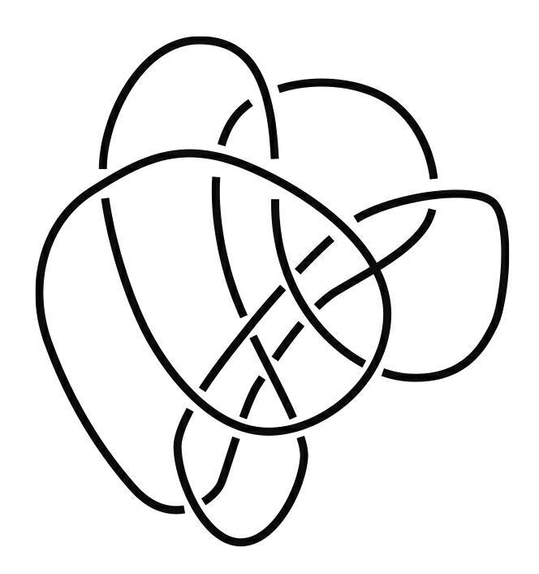

绳链——无论是珍珠项链还是装饰彩灯，都会面临一个棘手的问题——打结。有时绳子打结非常严重，无论你多么熟练或者多么细心都没办法解开绳结。这种情况下，凭感觉解开绳结的操作并没有什么帮助，而紧张地将绳子向四周拉扯只会让情况变得更加糟糕。但如果现场有一位数学家，事情就会轻松很多，因为绳结问题本身就是数学的一部分。
数学界有一个精妙的扭结理论——该拓扑学理论从领带结、渔夫结等绳结中发展而来，有着一些非常有趣的特性。
打个比方，任何一个两端封闭且可以解开的绳结——同时该绳子中的扭结没有互相缠绕在一起(1)——我可以只凭借三个不同的变换（有时可能需要重复这些变换）解开。解开绳结的变换被称为“瑞德迈思特变换”（Reidemeister move），该变换的详细过程如下所示：
（Ⅰ）人们可以增加一个扭结或者解开一个扭结。
（Ⅱ）人们可以增加交叉点或者减少交叉点。
（Ⅲ）人们可以把绳结上的一根绳索从交叉点的一端移动到另一端。
用图象表示这三种变换就会更清晰易懂：

瑞德迈思特变换
上述三种变换方式便是瑞德迈思特变换的本质。这个变换由德国数学家库尔特·瑞德迈思特（Kurt Reidemeister）提出，他于1926年证明了此变换的合理性。但是在1933年纳粹势力上台后不久他就被免除了大学教授职位。
路易斯·考夫曼（Louis Kauffman）和索菲亚·兰布罗普卢（Sofia Lambropoulou）曾在他们的学术论文中提出过这个问题：下图所示的扭结是无解的吗？还是说它可以被解开成一个封闭的圆环呢？

该问题的答案为：人们可以将这个绳结解开。下图就展示了每一个瑞德迈思特变换：

如果你还是觉得难以置信，不妨自己用一根绳子扭出这个绳结，然后在桌子上按照上述步骤变换，这样你就能亲眼看到，从而接受这个绳结本来就是一个封闭的圆环了。
我们通过扭结理论还能了解什么呢？弦理论！弦理论是可以解释宇宙的一项理论。弦理论认为世界并不是三维的，也不是由极小的球状基本粒子组成的，而是由更小的弦组成的，这些弦有的闭合、有的张开，弦通过振动产生能量，从而构成了十维空间。
弦理论是探索万有理论的一个重大成果。该理论很可能统一所有有关世界如何形成的理论，它可以解释组成物质的所有微粒，也可以解释万物之间的相互作用。而扭结理论就能帮助我们理解弦理论中“弦”复杂的特性与作用。
在加利福尼亚大学圣巴巴拉分校任教的诺贝尔奖获得者戴维·格罗斯（David Gross）认为，如果弦理论本身不是万有理论，那么弦理论至少是通向万有理论的重要一步。而我也有幸在过去的2年中对此进行了长达10个月的研究。
附加题目：如果上述的问题太过困难，大家可以考虑一下下面这个扭结问题，这个扭结问题只需要用眼睛就能轻而易举地解开。

(1) 在扭结问题中，要求扭结是连通的、封闭的、不自交的（自己与自己不相交，没有黏合处）曲线。